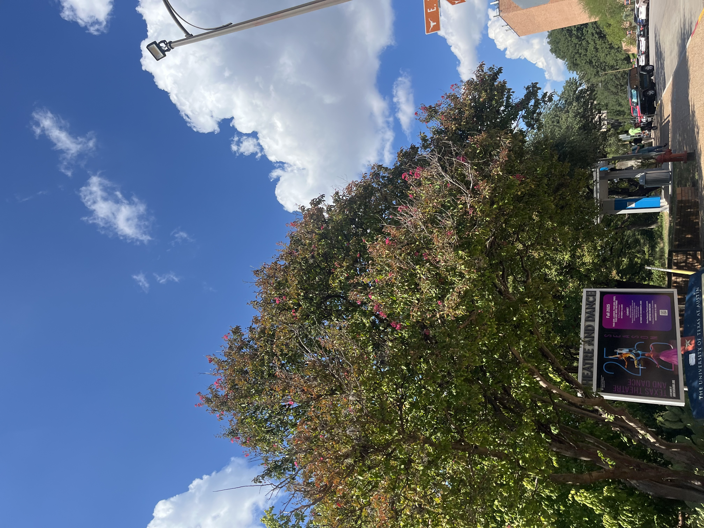
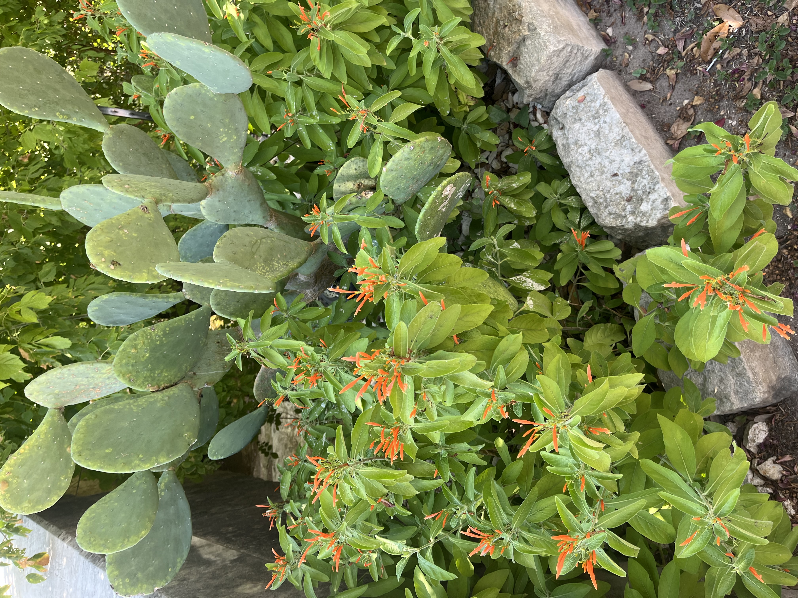
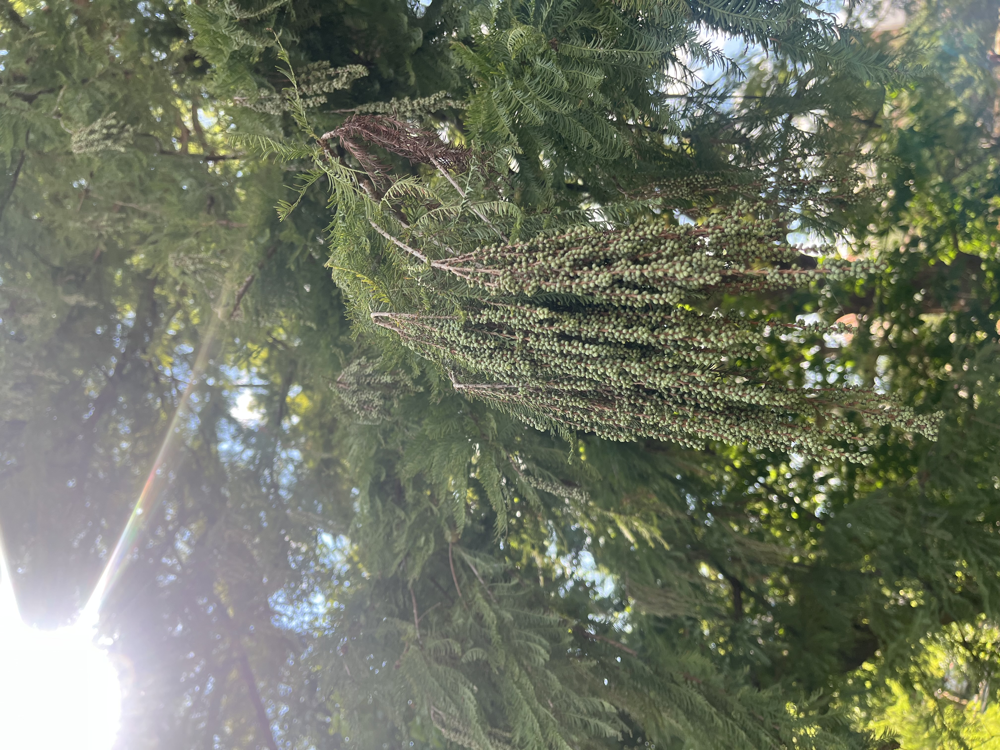

hey you! I lost some pages in my journal... could you help me find them?
yes!amazing. I remember I had it at the art building intersection right in front of winship...
go to intersection!
1: Poison Ivy: toxicodendron radicans
2: Crepe Myrtle: lagerstroemia indica

3: Whale's Tongue Agave: agave ovatifolia
4: Mexican Honeysuckle: justicia spicigera

5: Heavenly Bamboo: nandina domestica

6: Osage Orange: maclura pomifera

7: Common Fig: ficus carica
8: Bald Cypress: taxodium distichum

9: Turk's Cap: malvaviscus arboreus

10: Cochineal Nopal Cactus: nopalea cochenillifera
Today is September 1st, 2005. I guess it's been a year now since the last time we've walked along this path together. It still feels like yesterday when you stopped me from touching the three-leaved plant, yelling out from the other side of the tree, "that's poison ivy!". I wonder if anyone else since then got rashes from the same plant, 100 grams of urushiol coming into contact with skin.
Today is September 2nd, 2005. The Crepe Myrtles are still in bloom, pink dots that decorate the treescape. You told me to thank them for adding beauty to our lives for a "whopping 100 days of flowering!!!". Perhaps today is the last 100th day, though; everything seems dull---the once immensely vibrant pink fading into gray, gray, gray.
September 3rd, 2005. The heat is unbearable today. Waves of hot rolling off of the cement. Whale's tongue agave; they flower once and die. We talked about the beauty of that singularity---how that moment of flowering is an "extra special blip of time" since it won't happen again. I wish I could take that back. You were the most eternally beautiful flower of my life. But you are gone. You are gone and I can't ever have you back! How foolish of me to ever think that makes things have more meaning.
September 4th, 2005. Every night since the day you left this world, I've envisioned alternate realities where you stayed, a life where you, like sweet Mexican Honeysuckles, remained evergreen, blooming throughout the upcoming gray winter. We went on a thousand more walks together. You went on to earn your Master's in Botany. Our house was filled with canary dragon lilies and honey dandelions and everything in between.
September 5th, 2005. Heavenly bamboo--only named bamboo because the leaves look somewhat similar to bamboo tree leaves. Yet, it could never be an actual bamboo, eternally a shrub. Sorry, I know you'd probably be mad at me for insulting it. I think I'm getting better at keeping my shock in control when I see someone who looks like you. Surprisingly, I hate it when that happens. Jet black hair that shines a hint of blue under the sunlight. An obession with denim and a slight smile that reveals the top teeth. No matter how much any other being could emulate your features, they could never be a bamboo, could never be you, and that thought makes my heart twist for a split second each time.
September 6th, 2005. The first time I knew I had fallen in love with you was when the osage orange dropped on your head. That big brain-like fruit bonked you and we both couldn't believe what just happened! We clutched our stomachs and laughed and laughed and laughed, and my vision was blurry with tears in my eyes, but through that haze I caught a glimpse of your face and I swear my heart skipped a beat and its rhythm has been different ever since. You giggled "it's okay, osage I forgive you because you keep the mosquitoes away!"
dear diary, bla bla (plant 7)
dear diary, bla bla (plant 8)
dear diary, bla bla (plant 9)
dear diary, bla bla (plant 10)